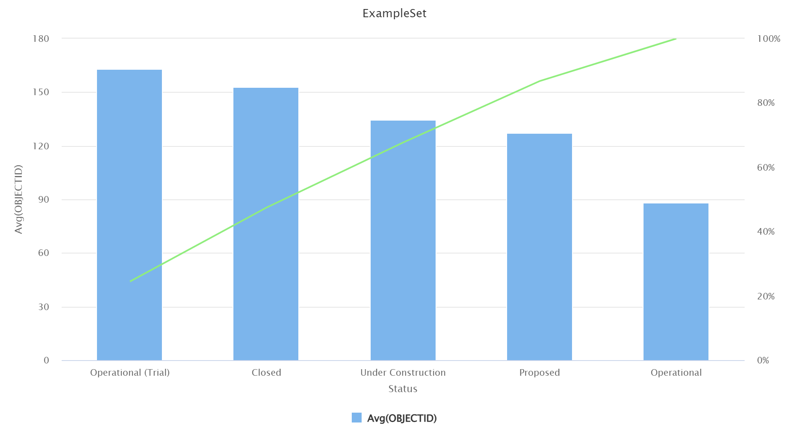
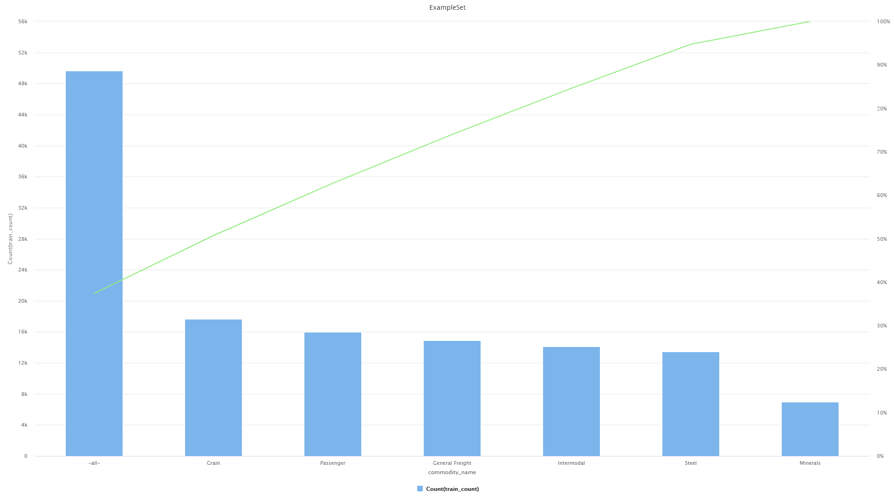
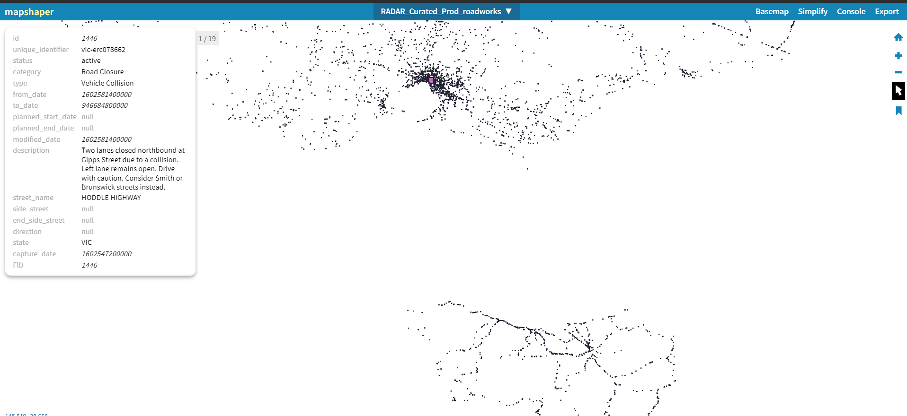
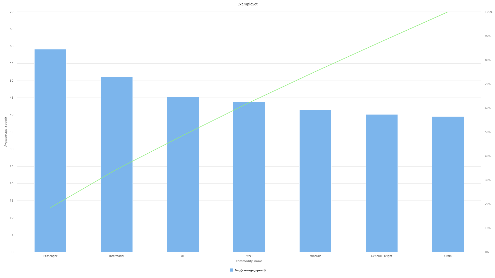

Discover the Difference: Elevate Your Choice with US.
A new way of thinking freight transportation
- 
-
Right now little over 40% of roads in Australia is operational with the rest being closed, on trial or closed. This makes freight transportation very hard as there are limited number of roads via which the goods can arrive safely and within time. So having a system that can use existing data to find the best possible and efficient route for transporting goods is very beneficial, as it can save valuable resources and energy which can be redirected elsewhere.
- 
-
According to the data with increased number of rail transportation, issues with logistics become less significant as we can trasnsport cargo which are less prone to damage in bulk also the goods can be delivered within time as there is less congestion on the rail lines. Furthermore the regular passenger carts are not burdened with goods transportation.
- 
-
The conditions of the roads via which trucks transport good is also very important. For example if we have a road closure or the roads are damaged, it can cause serious delays in logistics and goods transportation. The required time for delivery might increase and the safety of the goods are also compromised. Our software makes use of open data to calculate the best route beforehand so that there are no disruptions in freight transoportation and makes sure of customer satisfaction.
- 
-
We give the power to the customer and ensure that their goods are delivered safely by giving them the option to select what kind of goods they want to deliver. And our system can automate the task of finding the best possible mode of transportation to ensure product safety and also find a quick method of transportation to make sure that the items are timely delivered.
❮
❯